雲端訂閱：中小企業首選
標準方案、快速開通、自助設定。網站與 LINE 客服、常見問題自助，幾天內上線。
輕預算，服務提升工作效能。
Qbi Cloud 雲端輕量訂閱系列：智能機器人 Chatbot、智能客服管理系統 CRM 與產業應用解決方案，中小企業數位轉型第一步。
全通路社群服務
24/7 服務解決通路切換不便，整合 LINE、Messenger、Web 於單一平台方便服務。
人資諮詢顧問
幫助人資排解大量重複諮詢，快速提升工作效率、增加員工滿意度。
線上飯店櫃檯
不必廣撒預算也能精準驅動客戶群，透過服務再行銷，提升客戶再訪率。
臺灣雲市集 TCloud：政府幫你出 8 成，最高補助 3 萬點
鼓勵中小及微型企業使用創新數位科技。加入臺灣雲市集會員即可獲得點數補助，用點數採購 QbiAI Cloud 方案。
加入臺灣雲市集會員
用工商憑證註冊，填寫數位需求自評表。
獲得補助點數
依規定核發點數，最高 3 萬點（即 3 萬元）。
採購解決方案
在雲市集選擇 QbiAI Cloud 方案。
付款
政府補助 8 成，企業負擔 2 成。
QbiAI Cloud 雲市集數位轉型補助方案
七種組合，從一個機器人到一整個微型客服中心；也可以自訂其他方案（無補助）。
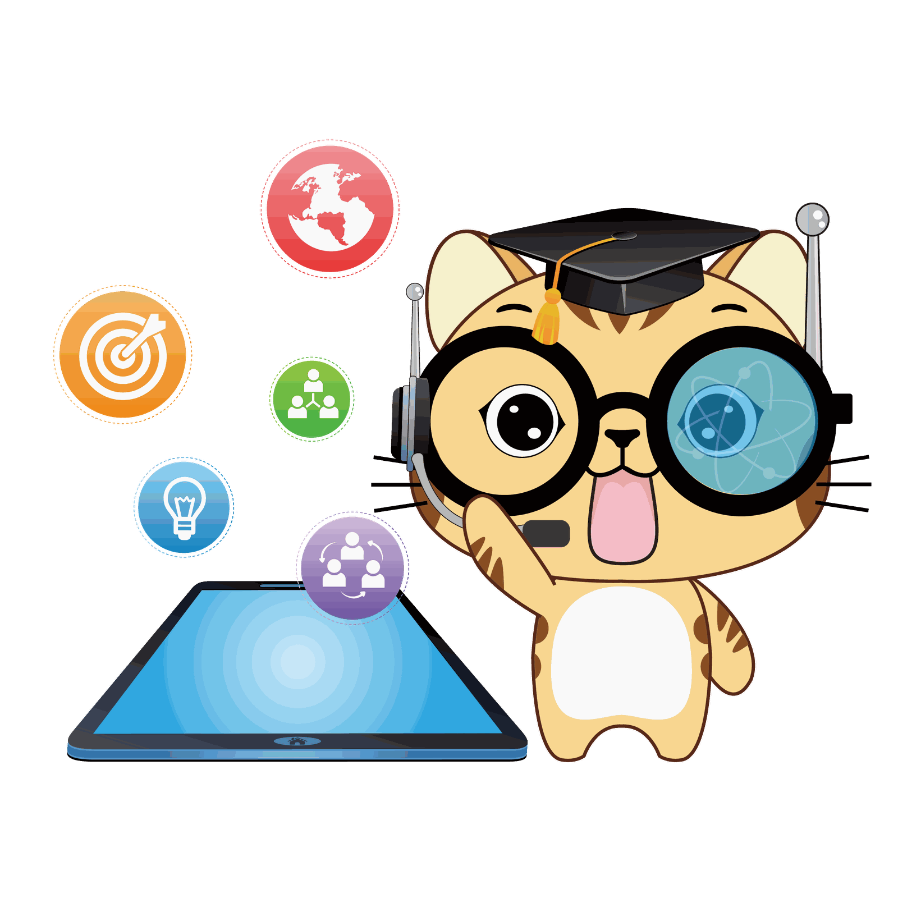
QbiAI 企業機器人
1 個文字通路＋1 個企業形象機器人
- 服務不打烊，提供 24/7 服務
- 自然語意理解，對話起來就像真人
- Facebook Messenger／LINE／Web 任選一通路
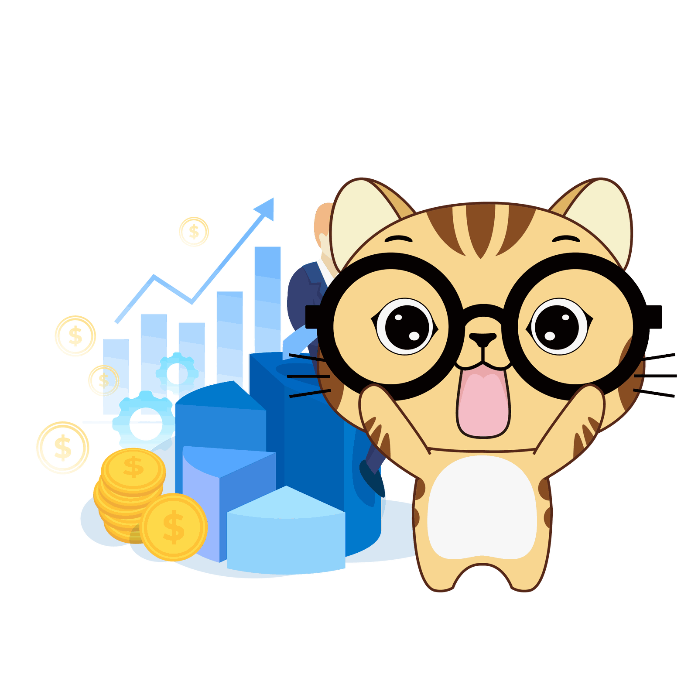
QbiAI 員工諮詢機器人
1 個文字通路＋1 個員工諮詢機器人
- 立即解決員工問題，提升工作效率
- 自然語意理解，對話起來就像真人
- Facebook Messenger／LINE／Web 任選一通路
QbiAI 電話客服
2 個電話通路＋1 席電話客服專員＋1 席電話客服督導
- 整合渠道訊息，擴充通路更輕鬆
- 進線服務控制，商機不再遺漏
- 支援多種訊息格式
QbiAI 文字客服
1 個文字通路＋1 席文字客服專員
- 系統功能強大，操作直覺簡易上手
- 歸戶所有來電資料，CRM 一次搞定
- 監控服務水準，維持一致的服務品質
QbiAI 智能客服
1 個文字通路＋1 個企業形象機器人＋1 席文字客服專員
- 人機協作，提升服務滿意度
- 機器人互動回應，增加企業形象
- 專注服務客戶，服務品質更優質
QbiAI 全通路客服
2 個文字通路＋2 個電話通路＋1 席文字及電話客服專員＋1 席督導
- 服務不中斷，同時服務電話及文字客戶
- 使用系統零設備成本，立即開始服務
- 後疫情時代，居家服務也可行
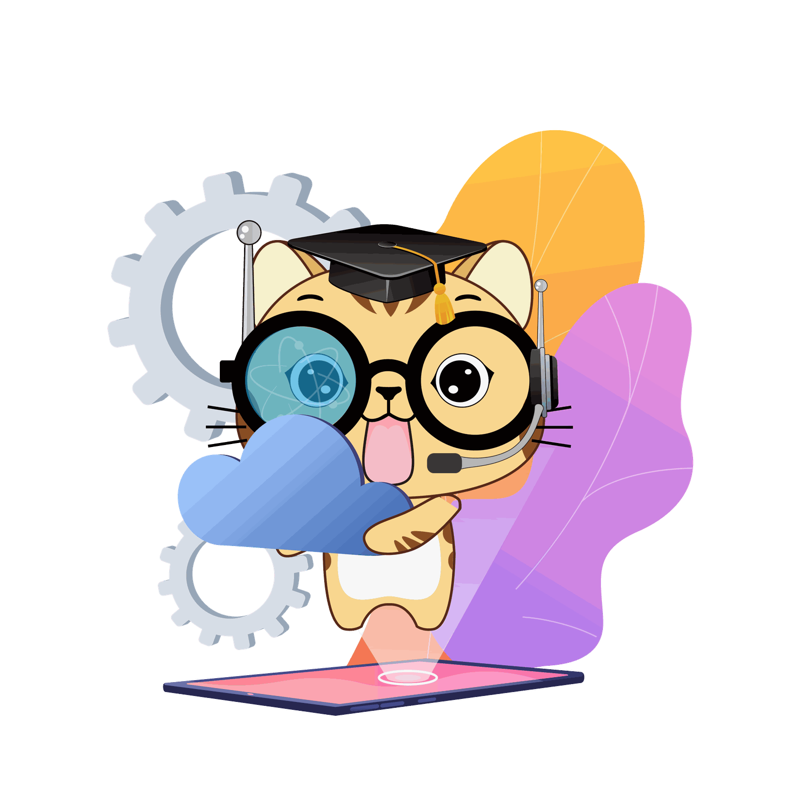
QbiAI 全通路智能客服
2 個文字通路＋2 個電話通路＋1 個企業形象機器人＋1 席文字及電話客服＋1 席督導＋知識管理＋服務追蹤
- 低成本為企業創造微型客服中心
- 雲上服務，零維護成本
- 分析顧客行為，行銷推廣更精準
- 服務需求不遺漏，隨時追蹤服務狀態
方案內容取自現行官網；補助條件與點數以臺灣雲市集公告為準。
加入臺灣雲市集會員，12 個步驟
準備好工商憑證就能開始；完成後即可用補助點數採購。
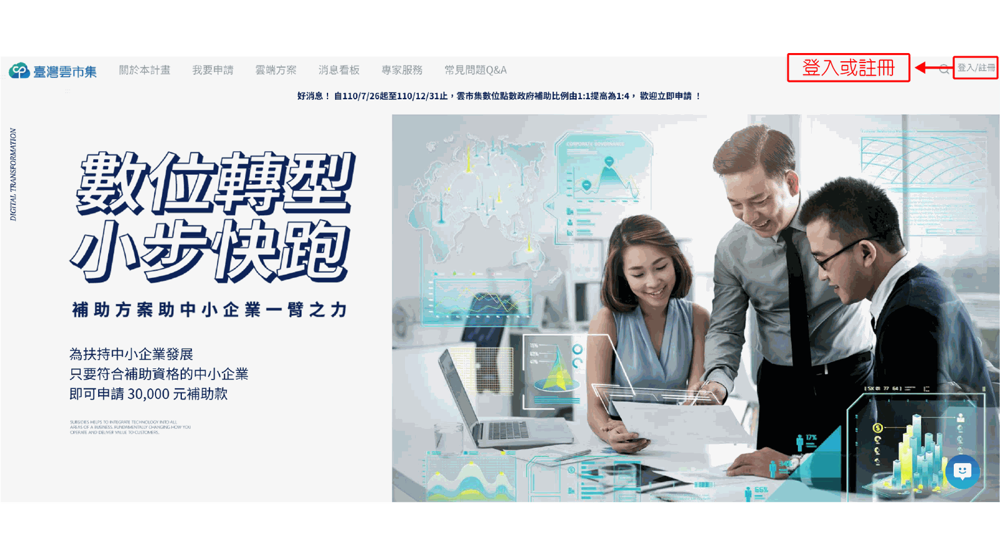
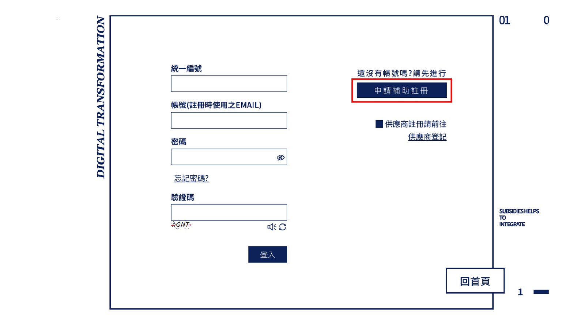
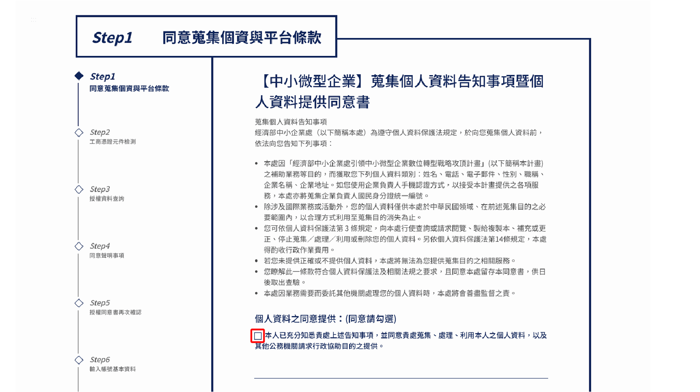
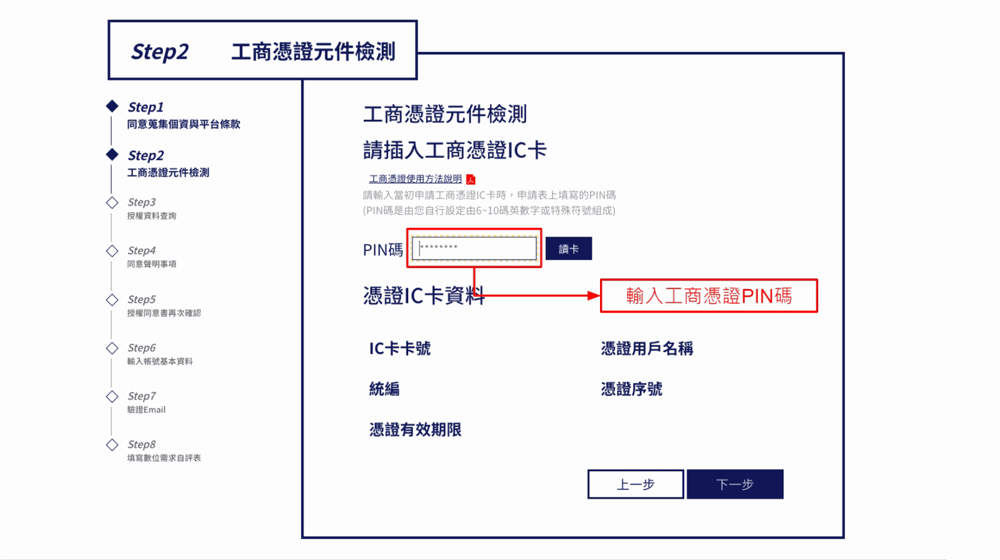
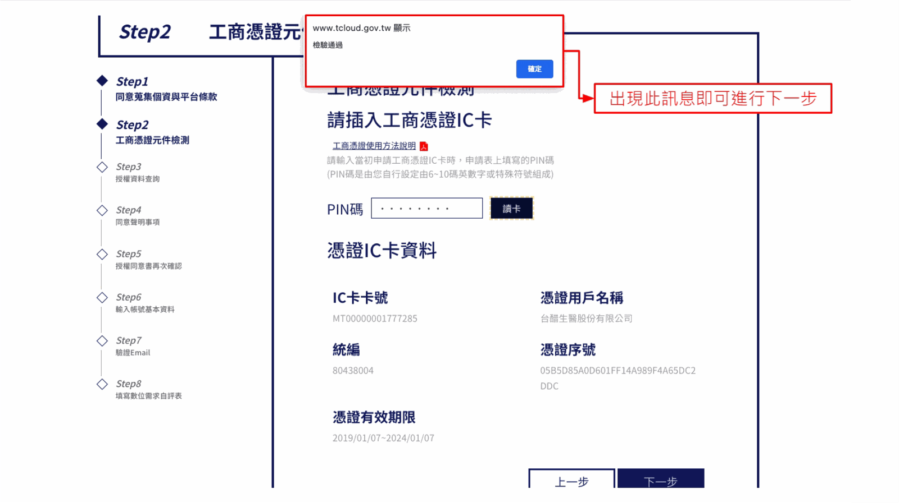
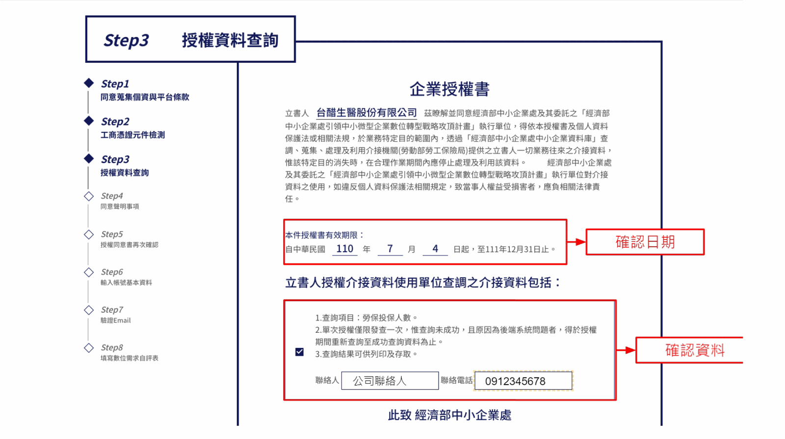
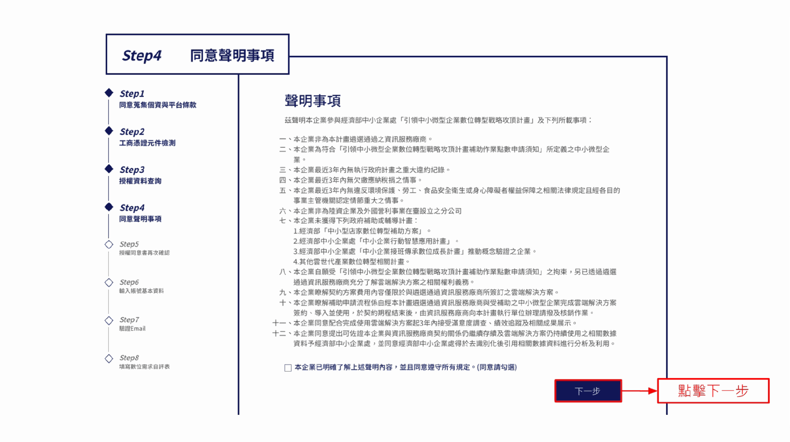
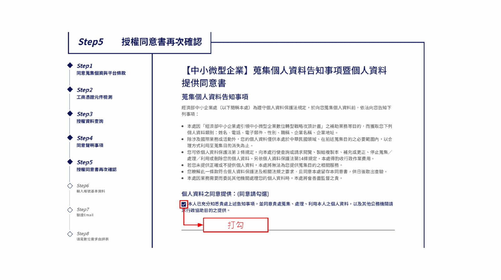
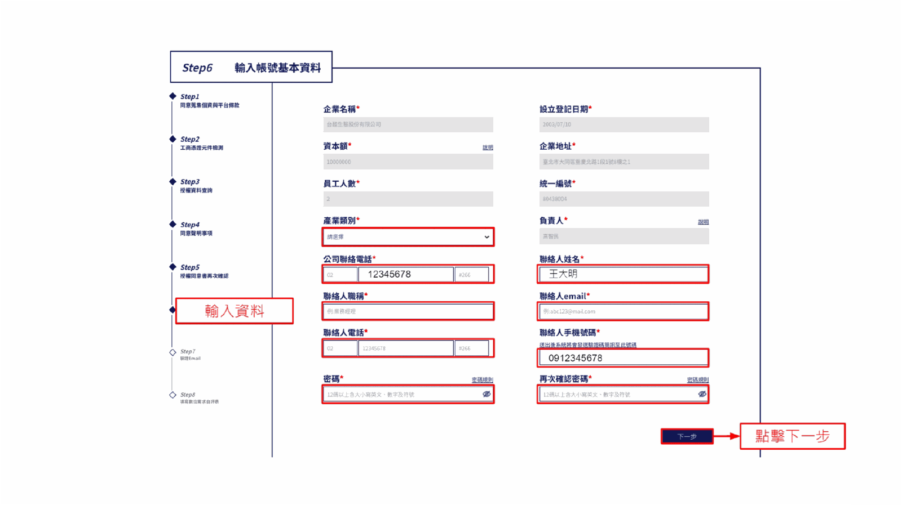
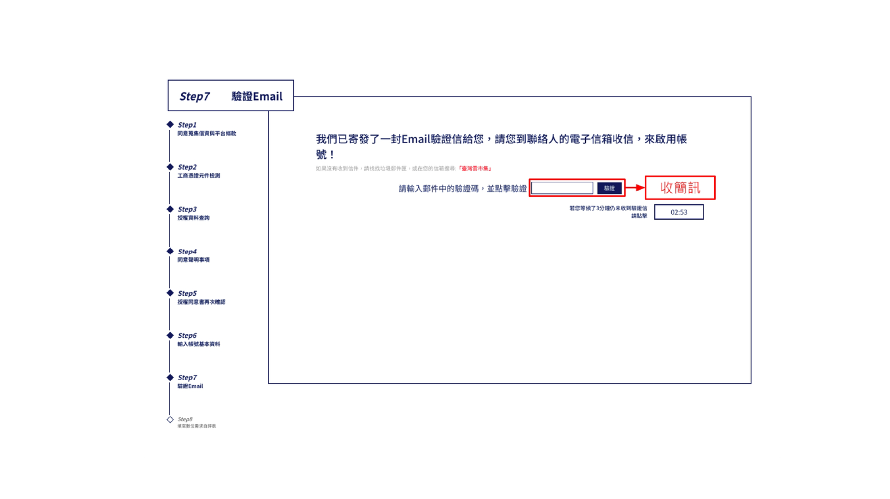
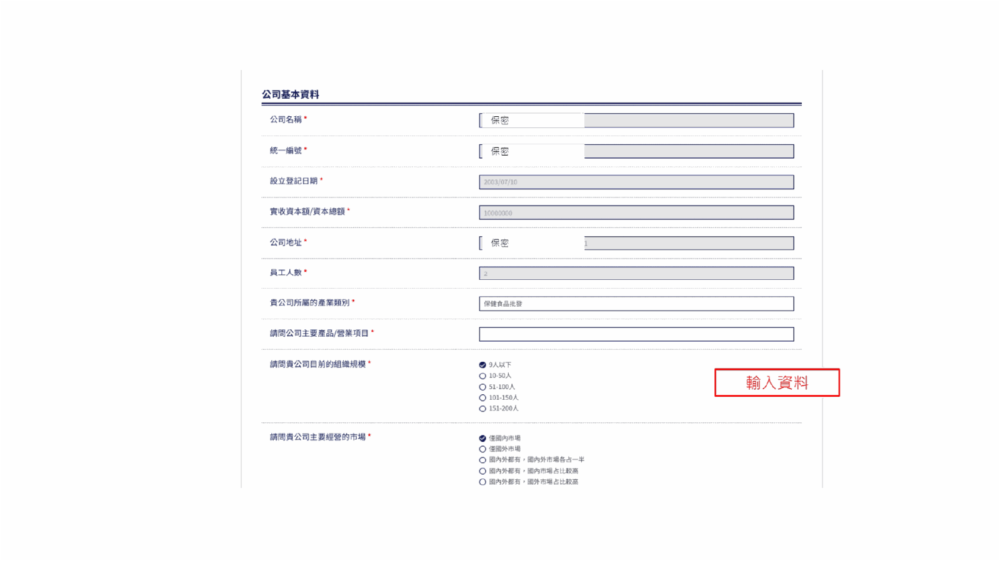
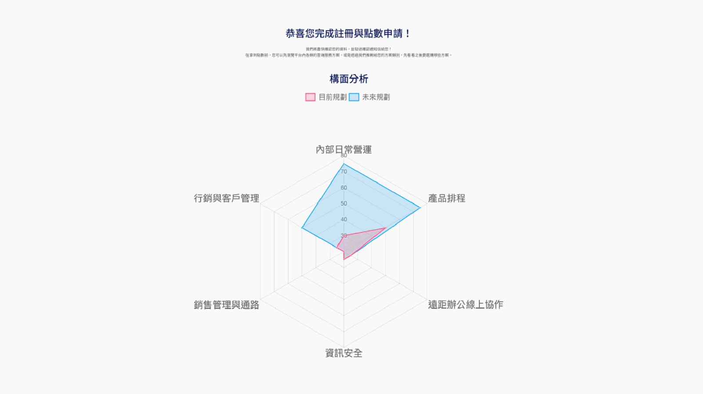
想知道雲端訂閱適不適合你？
告訴我們你的通路與常見問題，顧問幫你挑方案。